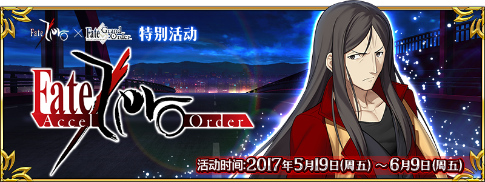
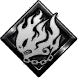
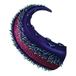
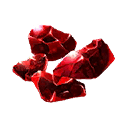

本頁面資訊僅供參考，實際情況請以遊戲內資料為準。
由於直接使用官方翻譯，可能會與其他站內翻譯相異，敬請見諒。
其他公告內容請參照日版當時公告翻譯。
- 主線關卡
-
ACT-1 「通曉冬木的男子」 消耗AP 推薦Lv. 初次報酬 開放條件 5 10 通過：Grand Order 〉 職階傾向 QP Exp 絆 
1,400 275 115 Wave 1 1  Lv.7 Assassin HP19,728
Lv.7 Assassin HP19,728掉落總合機率
(可能掉落箱數)4100%(1) ACT-2 「武力介入」 消耗AP 推薦Lv. 初次報酬 開放條件 5 10 通過：ACT-1 「通曉冬木的男子」
達成：No.2〉 職階傾向 QP Exp 絆 
1,400 275 115 Wave 1 1  Lv.8 阿爾托莉亞 HP25,840
Lv.8 阿爾托莉亞 HP25,840掉落總合機率
(可能掉落箱數)100%(1) ACT-3 「管理者」 消耗AP 推薦Lv. 初次報酬 開放條件 5 15 通過：ACT-2 「武力介入」
達成：No.80〉 職階傾向 QP Exp 絆 

1,900 550 165 Wave 1 1  Lv.8 咒語書 HP3,675
Lv.8 咒語書 HP3,6752 Lv.8 咒語書 HP3,675Wave 2 1 Lv.11 咒語書 HP5,6442 Lv.11 咒語書 HP5,644Wave 3 1  Lv.20 紅寶石魔偶 HP20,746
Lv.20 紅寶石魔偶 HP20,7462 Lv.13 咒語書 HP9,040掉落總合機率
(可能掉落箱數)44500%(5) 100%(1) ACT-4 「暗影下蠢動之物」 消耗AP 推薦Lv. 初次報酬 開放條件 5 15 通過：ACT-3 「管理者」
達成：No.26〉 職階傾向 QP Exp 絆 
1,900 550 165 Wave 1 1  Lv.9 小魔 HP4,082
Lv.9 小魔 HP4,082Wave 2 1 Lv.12 小魔 HP6,1092 Lv.12 小魔 HP6,109Wave 3 1 Lv.15 小魔 HP10,3212 Lv.15 小魔 HP10,3213 Lv.20 小魔 HP13,523掉落總合機率
(可能掉落箱數)4600%(6) ACT-5 「埃爾梅羅會談」 消耗AP 推薦Lv. 初次報酬 開放條件 5 15 2通過：ACT-4 「暗影下蠢動之物」
達成：No.50〉 職階傾向 QP Exp 絆 1,900 550 165 Wave 1 1 Lv.8 咒語書 HP4,2002 Lv.8 咒語書 HP4,200Wave 2 1 Lv.11 咒語書 HP5,6442 Lv.11 咒語書 HP5,6443 Lv.11 咒語書 HP5,644Wave 3 1 Lv.22 紅寶石魔偶 HP13,6852 Lv.15 咒語書 HP7,5063 Lv.15 咒語書 HP7,506掉落總合機率
(可能掉落箱數)44700%(7) 100%(1) ACT-6 「共鬥開始」 消耗AP 推薦Lv. 初次報酬 開放條件 5 20 通過：ACT-5 「埃爾梅羅會談」 〉 職階傾向 QP Exp 絆 2,400 955 215 Wave 1 1 Lv.10 小魔 HP6,4152 Lv.10 小魔 HP6,4153 Lv.10 小魔 HP6,415Wave 2 1 Lv.13 小魔 HP8,2192 Lv.13 小魔 HP8,2193 Lv.13 小魔 HP8,219Wave 3 1 Lv.15 小魔 HP10,3212  Lv.18 海魔 HP16,107
Lv.18 海魔 HP16,1073 Lv.15 小魔 HP10,321掉落總合機率
(可能掉落箱數)48800%(8) 100%(1) ACT-7 「狩獵藍鬍子」 消耗AP 推薦Lv. 初次報酬 開放條件 5 20 2通過：ACT-6 「共鬥開始」
達成：No.33〉 職階傾向 QP Exp 絆 2,400 955 215 Wave 1 1 Lv.12 小魔 HP5,3452 Lv.12 小魔 HP5,3453 Lv.12 小魔 HP5,345Wave 2 1 Lv.14 海魔 HP6,3072 Lv.14 海魔 HP6,3073 Lv.14 小魔 HP6,160Wave 3 1 Lv.15 大食海魔 HP13,1932 Lv.33 吉爾 HP32,0103 Lv.16 海魔 HP9,574掉落總合機率
(可能掉落箱數)48100%(1) 400%(4) 400%(4) ACT-8 「Irregular」 消耗AP 推薦Lv. 初次報酬 開放條件 5 20 2通過：ACT-7 「狩獵藍鬍子」
達成：No.55〉 職階傾向 QP Exp 絆 2,400 955 215 Wave 1 1  Lv.20 Assassin？ HP84,449
Lv.20 Assassin？ HP84,449掉落總合機率
(可能掉落箱數)100%(1) ACT-9 「騎士王再現」 消耗AP 推薦Lv. 初次報酬 開放條件 5 25 通過：ACT-8 「Irregular」
達成：No.36〉 職階傾向 QP Exp 絆 2,900 1,385 265 Wave 1 1 Lv.20 阿爾托莉亞 HP109,450掉落總合機率
(可能掉落箱數)100%(1) ACT-10 「謎之暗殺者」 消耗AP 推薦Lv. 初次報酬 開放條件 5 25 通過：ACT-9 「騎士王再現」
達成：No.29〉 職階傾向 QP Exp 絆 2,900 1,385 265 Wave 1 1 Lv.23 Assassin？ HP127,166掉落總合機率
(可能掉落箱數)100%(1) ACT-11 「孔明的陷阱」 消耗AP 推薦Lv. 初次報酬 開放條件 5 30 通過：ACT-10 「謎之暗殺者」
達成：No.96〉 職階傾向 QP Exp 絆 3,400 2,190 315 Wave 1 1 Lv.10 Assassin HP5,9312 Lv.10 Assassin HP5,931Wave 2 1  Lv.14 Assassin HP15,924
Lv.14 Assassin HP15,9242 Lv.14 Assassin HP12,540Wave 3 1 Lv.16 Assassin HP47,4992 Lv.13 Assassin HP25,8933 Lv.13 Assassin HP27,187掉落總合機率
(可能掉落箱數)48400%(4) 300%(3) ACT-12 「聖杯問答」 消耗AP 推薦Lv. 初次報酬 開放條件 5 35 2通過：ACT-11 「孔明的陷阱」
達成：No.23〉 職階傾向 QP Exp 絆 3,900 3,815 365 Wave 1 1  Lv.20 吉爾伽美什 HP129,216
Lv.20 吉爾伽美什 HP129,216掉落總合機率
(可能掉落箱數)100%(1) ACT-13 「亂戰」 消耗AP 推薦Lv. 初次報酬 開放條件 5 35 2通過：ACT-12 「聖杯問答」
達成：No.39〉 職階傾向 QP Exp 絆 3,900 3,815 365 Wave 1 1  Lv.25 Berserker HP159,324
Lv.25 Berserker HP159,324掉落總合機率
(可能掉落箱數)100%(1) ACT-14 「狙擊愛麗絲菲爾之影」 消耗AP 推薦Lv. 初次報酬 開放條件 5 35 通過：ACT-13 「亂戰」
達成：No.20〉 職階傾向 QP Exp 絆 3,900 3,815 365 Wave 1 1 Lv.25 Assassin？ HP140,690掉落總合機率
(可能掉落箱數)100%(1) ACT-15 「目標為大聖杯」 消耗AP 推薦Lv. 初次報酬 開放條件 5 40 通過：ACT-14 「狙擊愛麗絲菲爾之影」
達成：No.97〉 職階傾向 QP Exp 絆 4,400 5,690 415 Wave 1 1 Lv.12 Assassin HP10,7622 Lv.12 Assassin HP10,2503 Lv.12 Assassin HP16,2294 Lv.14 Assassin HP12,5405 Lv.14 Assassin HP11,9436 Lv.14 Assassin HP15,1287 Lv.18 Assassin HP18,2418 Lv.18 Assassin HP17,3729 Lv.22 Assassin HP19,64510 Lv.48 Assassin HP43,260掉落總合機率
(可能掉落箱數)48100%(1) 300%(3) 600%(6) ACT-16 「王的矜持」 消耗AP 推薦Lv. 初次報酬 開放條件 5 45 通過：ACT-15 「目標為大聖杯」
達成：No.51〉 職階傾向 QP Exp 絆 
4,900 7,815 465 Wave 1 1  Lv.35 伊斯坎達爾 HP158,268
Lv.35 伊斯坎達爾 HP158,268掉落總合機率
(可能掉落箱數)100%(1) ACT-17 「御三家的悲願」 消耗AP 推薦Lv. 初次報酬 開放條件 5 45 通過：ACT-16 「王的矜持」
達成：No.60〉 職階傾向 QP Exp 絆 4,900 7,815 465 Wave 1 1 Lv.30 蘭斯洛特 HP166,592掉落總合機率
(可能掉落箱數)100%(1) ACT-18 「墮落之杯」 消耗AP 推薦Lv. 初次報酬 開放條件 5 50 通過：ACT-17 「御三家的悲願」
達成：No.40〉 職階傾向 QP Exp 絆 
5,400 10,190 515 Wave 1 1  Lv.40 黑聖杯 HP187,008
Lv.40 黑聖杯 HP187,008掉落總合機率
(可能掉落箱數)10100%(1) ACT-EX 「輪轉聖杯回收」 消耗AP 推薦Lv. 初次報酬 開放條件 5 55 通過：ACT-18 「墮落之杯」
達成：No.12〉 職階傾向 QP Exp 絆 5,900 12,815 565 Wave 1 1  Lv.60 Avenger HP209,132 掉落總合機率
(可能掉落箱數)10100%(1) 打倒土之愛麗 序 消耗AP 推薦Lv. 初次報酬 開放條件 40 60 501/5 0:00~1/19 12:59
通過：ACT-EX 「輪轉聖杯回收」
入手：魔術礦石碎片x18〉 職階傾向 QP Exp 絆 
6,400 15,690 615 Wave 1 1  Lv.35 人工生命體 HP9,406
Lv.35 人工生命體 HP9,4062 Lv.35 人工生命體 HP9,4063 Lv.35 人工生命體 HP9,406Wave 2 1 Lv.40 人工生命體 HP14,2692 Lv.25 原型人工生命體 HP16,4963 Lv.25 原型人工生命體 HP16,496Wave 3 1 Lv.40 原型人工生命體 HP60,4462 Lv.40 原型人工生命體 HP60,4463  Lv.75 土之愛麗 HP185,963
Lv.75 土之愛麗 HP185,963掉落總合機率
(可能掉落箱數)481034%(12) 156%(4) 312%(8) 300%(3) 打倒水之愛麗 序 消耗AP 推薦Lv. 初次報酬 開放條件 40 60 501/5 0:00~1/19 12:59
通過：ACT-EX 「輪轉聖杯回收」
入手：海魔之足x18〉 職階傾向 QP Exp 絆 6,400 15,690 615 Wave 1 1 Lv.33 海魔 HP8,3242 Lv.33 海魔 HP8,3243 Lv.33 海魔 HP8,324Wave 2 1 Lv.36 海魔 HP13,3332 Lv.36 海魔 HP13,3333 Lv.36 海魔 HP13,333Wave 3 1 Lv.40 大食海魔 HP50,4502  Lv.72 水之愛麗 HP197,068
Lv.72 水之愛麗 HP197,0683 Lv.40 大食海魔 HP50,450掉落總合機率
(可能掉落箱數)10822%(10) 300%(3) 390%(10) 打倒火之愛麗 序 消耗AP 推薦Lv. 初次報酬 開放條件 40 60 501/5 0:00~1/19 12:59
通過：ACT-EX 「輪轉聖杯回收」
入手：至寶之杯x18〉 職階傾向 QP Exp 絆 6,400 15,690 615 Wave 1 1 Lv.28 魔導書 HP9,8522 Lv.48 紅寶石魔偶 HP9,7093 Lv.28 魔導書 HP9,852Wave 2 1 Lv.57 紅寶石魔偶 HP13,2212 Lv.57 紅寶石魔偶 HP13,2213 Lv.57 紅寶石魔偶 HP13,221Wave 3 1 Lv.65 火之愛麗 HP203,5952 Lv.48 水晶魔偶 HP56,9363 Lv.45 魔導書 HP52,868掉落總合機率
(可能掉落箱數)8481024%(6) 14%(6) 234%(6) 156%(4) 78%(2) 300%(3) 打倒風之愛麗 序 消耗AP 推薦Lv. 初次報酬 開放條件 40 60 501/5 0:00~1/19 12:59
通過：ACT-EX 「輪轉聖杯回收」
入手：暗殺者面具x18〉 職階傾向 QP Exp 絆 6,400 15,690 615 Wave 1 1 Lv.30 基底之紮伊德 HP9,8442 Lv.30 基底之紮伊德 HP9,8443 Lv.28 迅速之馬庫爾 HP9,551Wave 2 1 Lv.35 怪腕之戈茲爾 HP14,1962 Lv.38 基底之紮伊德 HP13,6193 Lv.36 迅速之馬庫爾 HP12,293Wave 3 1 Lv.47 迅速之馬庫爾 HP53,5062  Lv.77 風之愛麗 HP180,234
Lv.77 風之愛麗 HP180,2343 Lv.47 怪腕之戈茲爾 HP58,455掉落總合機率
(可能掉落箱數)104813.5%(10) 300%(3) 117%(3) 273%(7) 打倒土之愛麗 真 消耗AP 推薦Lv. 初次報酬 開放條件 40 70 50000001/5 0:00~1/19 12:59
通過：打倒土之愛麗 序
入手：魔術礦石碎片x19〉 職階傾向 QP Exp 絆 7,400 22,190 715 Wave 1 1 Lv.40 人工生命體 HP10,7012 Lv.40 人工生命體 HP10,7013 Lv.26 原型人工生命體 HP10,004Wave 2 1 Lv.45 人工生命體 HP16,0302 Lv.30 原型人工生命體 HP16,4733 Lv.30 原型人工生命體 HP16,473Wave 3 1 Lv.40 原型人工生命體 HP65,9412 Lv.40 原型人工生命體 HP65,9413 Lv.80 土之愛麗 HP234,980掉落總合機率
(可能掉落箱數)481039.5%(13) 117%(3) 390%(10) 300%(3) 打倒水之愛麗 真 消耗AP 推薦Lv. 初次報酬 開放條件 40 70 50000001/5 0:00~1/19 12:59
通過：打倒水之愛麗 序
入手：海魔之足x19〉 職階傾向 QP Exp 絆 7,400 22,190 715 Wave 1 1 Lv.34 海魔 HP10,0842 Lv.34 海魔 HP10,0843 Lv.34 海魔 HP10,084Wave 2 1 Lv.36 大食海魔 HP15,8522 Lv.38 海魔 HP16,8723 Lv.38 海魔 HP16,872Wave 3 1 Lv.42 大食海魔 HP74,0622 Lv.75 水之愛麗 HP194,9583 Lv.42 大食海魔 HP74,062掉落總合機率
(可能掉落箱數)10825%(11) 300%(3) 429%(11) 打倒火之愛麗 真 消耗AP 推薦Lv. 初次報酬 開放條件 40 70 50000001/5 0:00~1/19 12:59
通過：打倒火之愛麗 序
入手：至寶之杯x19〉 職階傾向 QP Exp 絆 7,400 22,190 715 Wave 1 1 Lv.31 魔導書 HP10,9352 Lv.50 紅寶石魔偶 HP10,1023 Lv.31 魔導書 HP10,935Wave 2 1 Lv.60 紅寶石魔偶 HP18,1292 Lv.60 紅寶石魔偶 HP18,1293 Lv.60 水晶魔偶 HP17,791Wave 3 1 Lv.65 火之愛麗 HP232,6802 Lv.53 水晶魔偶 HP62,9343 Lv.50 魔導書 HP58,689掉落總合機率
(可能掉落箱數)8481024%(6) 18%(7) 234%(6) 117%(3) 156%(4) 300%(3) 打倒風之愛麗 真 消耗AP 推薦Lv. 初次報酬 開放條件 40 70 50000001/5 0:00~1/19 12:59
通過：打倒風之愛麗 序
入手：暗殺者面具x19〉 職階傾向 QP Exp 絆 7,400 22,190 715 Wave 1 1 Lv.33 怪腕之戈茲爾 HP10,7142 Lv.35 基底之紮伊德 HP12,5523 Lv.32 迅速之馬庫爾 HP10,939Wave 2 1 Lv.37 基底之紮伊德 HP17,6852 Lv.38 迅速之馬庫爾 HP17,2943 Lv.38 迅速之馬庫爾 HP17,294Wave 3 1 Lv.48 迅速之馬庫爾 HP62,8302 Lv.80 風之愛麗 HP215,6313 Lv.46 怪腕之戈茲爾 HP57,223掉落總合機率
(可能掉落箱數)104814%(10) 300%(3) 78%(2) 312%(8) 打倒水之愛麗 極 消耗AP 推薦Lv. 初次報酬 開放條件 40 80 1/5 0:00~1/19 12:59
通過：打倒水之愛麗 真
入手：海魔之足x20〉 職階傾向 QP Exp 絆 8,400 29,690 815 Wave 1 1 Lv.40 大食海魔 HP9,3862 Lv.40 大食海魔 HP9,3863 Lv.43 海魔 HP9,549Wave 2 1 Lv.44 大食海魔 HP77,5562 Lv.82 水之愛麗 HP308,8023 Lv.44 大食海魔 HP77,556掉落總合機率
(可能掉落箱數)10822%(9) 300%(3) 351%(9) 打倒火之愛麗 極 消耗AP 推薦Lv. 初次報酬 開放條件 40 80 1/5 0:00~1/19 12:59
通過：打倒火之愛麗 真
入手：至寶之杯x20〉 職階傾向 QP Exp 絆 8,400 29,690 815 Wave 1 1 Lv.50 水晶魔偶 HP10,3752 Lv.50 水晶魔偶 HP10,3753 Lv.43 魔導書 HP10,107Wave 2 1 Lv.70 火之愛麗 HP340,6322 Lv.55 水晶魔偶 HP84,8723 Lv.55 魔導書 HP88,861掉落總合機率
(可能掉落箱數)881016%(4) 18%(6) 156%(4) 234%(6) 300%(3) 打倒風之愛麗 極 消耗AP 推薦Lv. 初次報酬 開放條件 40 80 1/5 0:00~1/19 12:59
通過：打倒風之愛麗 真
入手：暗殺者面具x20〉 職階傾向 QP Exp 絆 8,400 29,690 815 Wave 1 1 Lv.39 怪腕之戈茲爾 HP10,5362 Lv.42 迅速之馬庫爾 HP11,9663 Lv.40 基底之紮伊德 HP11,942Wave 2 1 Lv.50 迅速之馬庫爾 HP71,1162 Lv.86 風之愛麗 HP323,2353 Lv.49 怪腕之戈茲爾 HP66,219掉落總合機率
(可能掉落箱數)104810%(7) 300%(3) 39%(1) 234%(6) 死之風，波斯之王 消耗AP 推薦Lv. 初次報酬 開放條件 40 90 51/5 0:00~1/19 12:59
通過：ACT-EX 「輪轉聖杯回收」
達成：No.100〉 職階傾向 QP Exp 絆 9,400 38,190 915 Wave 1 1  Lv.75 不死兵團 HP9,447
Lv.75 不死兵團 HP9,4472  Lv.75 不死兵團 HP9,541
Lv.75 不死兵團 HP9,5413 Lv.75 不死兵團 HP9,447Wave 2 1 Lv.77 不死兵團 HP13,0442 Lv.80 不死兵團 HP12,9983 Lv.80 不死兵團 HP12,998Wave 3 1 Lv.80 大流士三世 HP813,151掉落總合機率
(可能掉落箱數)5101010100%(1) 200%(2) 200%(2) 200%(2) - 住宅街
-
隱匿而來的面具 Rank D 消耗AP 推薦Lv. 初次報酬 開放條件 10 10 12/29 13:00~1/19 12:59
通過：ACT-1 「通曉冬木的男子」∞ 職階傾向 QP Exp 絆 1,400 275 115 Wave 1 1 Lv.8 基底之紮伊德 HP15,4242 Lv.8 基底之紮伊德 HP15,424掉落總合機率
(可能掉落箱數)42%(2) 138%(2) 隱匿而來的面具 Rank C 消耗AP 推薦Lv. 初次報酬 開放條件 15 20 512/29 13:00~1/19 12:59
通過：隱匿而來的面具 Rank D
入手：暗殺者面具x3∞ 職階傾向 QP Exp 絆 2,400 955 215 Wave 1 1 Lv.7 基底之紮伊德 HP8,3062 Lv.7 基底之紮伊德 HP8,306Wave 2 1 Lv.20 基底之紮伊德 HP56,5982 Lv.15 基底之紮伊德 HP35,811掉落總合機率
(可能掉落箱數)44%(4) 216%(4) 隱匿而來的面具 Rank B 消耗AP 推薦Lv. 初次報酬 開放條件 25 40 512/29 13:00~1/19 12:59
通過：隱匿而來的面具 Rank C
入手：暗殺者面具x10∞ 職階傾向 QP Exp 絆 4,400 5,690 415 Wave 1 1 Lv.18 迅速之馬庫爾 HP9,1972 Lv.18 迅速之馬庫爾 HP9,197Wave 2 1 Lv.25 基底之紮伊德 HP12,6962 Lv.25 迅速之馬庫爾 HP12,0923 Lv.25 基底之紮伊德 HP12,696Wave 3 1 Lv.35 迅速之馬庫爾 HP74,7202 Lv.33 基底之紮伊德 HP54,2753 Lv.33 迅速之馬庫爾 HP51,691掉落總合機率
(可能掉落箱數)4810.5%(8) 0.5%(1) 117%(3) 254.5%(5) 隱匿而來的面具 Rank A 消耗AP 推薦Lv. 初次報酬 開放條件 30 60 512/29 13:00~1/19 12:59
通過：隱匿而來的面具 Rank B
入手：暗殺者面具x14∞ 職階傾向 QP Exp 絆 6,400 15,690 615 Wave 1 1 Lv.28 迅速之馬庫爾 HP10,3472 Lv.28 迅速之馬庫爾 HP10,3473 Lv.28 迅速之馬庫爾 HP10,347Wave 2 1 Lv.33 迅速之馬庫爾 HP15,9772 Lv.33 迅速之馬庫爾 HP15,9773 Lv.33 迅速之馬庫爾 HP15,977Wave 3 1 Lv.46 怪腕之戈茲爾 HP99,5182 Lv.43 怪腕之戈茲爾 HP69,8143 Lv.40 迅速之馬庫爾 HP68,240掉落總合機率
(可能掉落箱數)816.5%(11) 1%(1) 488.5%(11) 隱匿而來的面具 Rank EX 消耗AP 推薦Lv. 初次報酬 開放條件 30 80 12/29 13:00~1/19 12:59
通過：ACT-18 「墮落之杯」
入手：暗殺者面具x17∞ 職階傾向 QP Exp 絆 8,400 29,690 815 Wave 1 1 Lv.33 基底之紮伊德 HP7,8942 Lv.33 迅速之馬庫爾 HP9,3983 Lv.33 基底之紮伊德 HP7,8944 Lv.33 迅速之馬庫爾 HP9,3985 Lv.33 基底之紮伊德 HP7,8946 Lv.33 迅速之馬庫爾 HP9,398Wave 2 1 Lv.35 迅速之馬庫爾 HP9,9622 Lv.35 怪腕之戈茲爾 HP9,4643 Lv.35 基底之紮伊德 HP10,4604 Lv.35 怪腕之戈茲爾 HP9,4645 Lv.35 迅速之馬庫爾 HP9,9626 Lv.35 怪腕之戈茲爾 HP9,4647 Lv.35 迅速之馬庫爾 HP9,962Wave 3 1 Lv.70 影從者 HP94,4822  Lv.50 凝視者 HP209,080
Lv.50 凝視者 HP209,080掉落總合機率
(可能掉落箱數)884828%(18) 20%(2) 3%(2) 194%(2) 177%(2) 156%(4) 468%(12) - 冬木大橋
-
BRIDGE BATTLE Rank D 消耗AP 推薦Lv. 初次報酬 開放條件 10 10 12/29 13:00~1/19 12:59
通過：ACT-1 「通曉冬木的男子」∞ 職階傾向 QP Exp 絆 1,400 275 115 Wave 1 1 Lv.10 基底之紮伊德 HP5,931Wave 2 1 Lv.16 基底之紮伊德 HP14,3172 Lv.13 基底之紮伊德 HP11,651掉落總合機率
(可能掉落箱數)43%(3) 177%(3) BRIDGE BATTLE Rank C 消耗AP 推薦Lv. 初次報酬 開放條件 15 20 12/29 13:00~1/19 12:59
通過：ACT-3 「管理者」∞ 職階傾向 QP Exp 絆 2,400 955 215 Wave 1 1 Lv.13 咒語書 HP9,8622 Lv.13 咒語書 HP9,862Wave 2 1 Lv.20 咒語書 HP23,9732 Lv.33 紅寶石魔偶 HP53,940掉落總合機率
(可能掉落箱數)443%(3) 2%(1) 177%(3) 39%(1) BRIDGE BATTLE Rank B 消耗AP 推薦Lv. 初次報酬 開放條件 25 40 512/29 13:00~1/19 12:59
通過：BRIDGE BATTLE Rank C
入手：魔術礦石碎片x4∞ 職階傾向 QP Exp 絆 4,400 5,690 415 Wave 1 1 Lv.25 雷電咒書 HP7,4352 Lv.25 火焰咒書 HP7,4353 Lv.25 冰雪咒書 HP7,435Wave 2 1 Lv.33 紅寶石魔偶 HP10,1132 Lv.28 雷電咒書 HP12,4633 Lv.28 疾風咒書 HP12,463Wave 3 1 Lv.30 火焰咒書 HP31,1172 Lv.52 紅寶石魔偶 HP68,3443 Lv.45 紅寶石魔偶 HP45,599掉落總合機率
(可能掉落箱數)8412%(6) 6%(3) 0.5%(1) 293%(6) 176%(3) BRIDGE BATTLE Rank A 消耗AP 推薦Lv. 初次報酬 開放條件 30 60 512/29 13:00~1/19 12:59
通過：BRIDGE BATTLE Rank B
入手：魔術礦石碎片x9∞ 職階傾向 QP Exp 絆 6,400 15,690 615 Wave 1 1 Lv.43 紅寶石魔偶 HP8,7262 Lv.32 冰雪咒書 HP9,5023 Lv.32 雷電咒書 HP9,502Wave 2 1 Lv.47 紅寶石魔偶 HP11,8912 Lv.35 雷電咒書 HP12,9693 Lv.47 紅寶石魔偶 HP11,891Wave 3 1 Lv.48 紅寶石魔偶 HP38,8362 Lv.67 紅寶石魔偶 HP50,555 Lv.60 水晶魔偶 HP67,6083 Lv.46 魔導書 HP114,818掉落總合機率
(可能掉落箱數)84814%(5) 12%(7) 1%(1) 252%(5) 175.5%(5) 39%(2) BRIDGE BATTLE Rank EX 消耗AP 推薦Lv. 初次報酬 開放條件 30 80 12/29 13:00~1/19 12:59
通過：ACT-18 「墮落之杯」
入手：至寶之杯x16∞ 職階傾向 QP Exp 絆 8,400 29,690 815 Wave 1 1 Lv.53 紅寶石魔偶 HP9,6402 Lv.53 紅寶石魔偶 HP9,6403 Lv.33 魔導書 HP9,695Wave 2 1 Lv.43 水晶魔偶 HP20,4222 Lv.38 雷電咒書 HP11,2483 Lv.35 魔導書 HP13,360Wave 3 1 Lv.80 影從者 HP208,4392 Lv.55 水晶魔偶 HP65,2863 Lv.40 魔導書 HP58,663掉落總合機率
(可能掉落箱數)88486%(2) 26%(7) 16%(6) 3%(2) 191%(2) 273%(7) 78%(2) 156%(4) - 埠頭
-
魔物盤踞之港 Rank D 消耗AP 推薦Lv. 初次報酬 開放條件 10 15 12/29 13:00~1/19 12:59
通過：ACT-2 「武力介入」∞ 職階傾向 QP Exp 絆 1,900 550 165 Wave 1 1  Lv.25 翅刃蟲 HP35,507
Lv.25 翅刃蟲 HP35,5072 Lv.28 翅刃蟲 HP26,909掉落總合機率
(可能掉落箱數)42%(2) 136%(2) 4%(2) 魔物盤踞之港 Rank C 消耗AP 推薦Lv. 初次報酬 開放條件 20 25 512/29 13:00~1/19 12:59
通過：魔物盤踞之港 Rank D
入手：至寶之杯∞ 職階傾向 QP Exp 絆 2,900 1,385 265 Wave 1 1 Lv.15 翅刃蟲 HP8,7322 Lv.15 翅刃蟲 HP8,732Wave 2 1 Lv.32 翅刃蟲 HP54,1502 Lv.25 翅刃蟲 HP28,4063 Lv.25 翅刃蟲 HP31,246掉落總合機率
(可能掉落箱數)45%(5) 311%(5) 10%(5) 魔物盤踞之港 Rank B 消耗AP 推薦Lv. 初次報酬 開放條件 25 40 512/29 13:00~1/19 12:59
通過：魔物盤踞之港 Rank C
入手：海魔之足x7∞ 職階傾向 QP Exp 絆 4,400 5,690 415 Wave 1 1 Lv.23 翅刃蟲 HP9,8402 Lv.23 翅刃蟲 HP9,8403 Lv.23 翅刃蟲 HP9,840Wave 2 1 Lv.25 翅刃蟲 HP11,3622 Lv.25 翅刃蟲 HP11,3623 Lv.25 翅刃蟲 HP11,362Wave 3 1 Lv.25 海魔 HP40,8952 Lv.33 翅刃群蟲 HP76,9283 Lv.28 翅刃蟲 HP33,240掉落總合機率
(可能掉落箱數)84810.4%(9) 2%(1) 0.5%(1) 39%(1) 273%(7) 135.3%(2) 18%(9) 魔物盤踞之港 Rank A 消耗AP 推薦Lv. 初次報酬 開放條件 30 60 512/29 13:00~1/19 12:59
通過：魔物盤踞之港 Rank B
入手：海魔之足x14∞ 職階傾向 QP Exp 絆 6,400 15,690 615 Wave 1 1 Lv.37 翅刃蟲 HP10,3792 Lv.37 翅刃蟲 HP10,3793 Lv.37 翅刃蟲 HP10,379Wave 2 1 Lv.26 翅刃群蟲 HP16,8142 Lv.26 翅刃群蟲 HP16,8143 Lv.39 翅刃蟲 HP15,289Wave 3 1 Lv.31 翅刃群蟲 HP60,2582 Lv.31 翅刃群蟲 HP60,2583 Lv.47 大食海魔 HP117,292掉落總合機率
(可能掉落箱數)84817.6%(12) 5%(2) 1%(1) 136.5%(2) 156%(4) 369.3%(8) 24%(12) 魔物盤踞之港 Rank EX 消耗AP 推薦Lv. 初次報酬 開放條件 30 80 12/29 13:00~1/19 12:59
通過：ACT-18 「墮落之杯」
入手：至寶之杯x17∞ 職階傾向 QP Exp 絆 8,400 29,690 815 Wave 1 1 Lv.45 翅刃蟲 HP10,0582 Lv.45 翅刃蟲 HP10,0583 Lv.29 翅刃群蟲 HP11,2434 Lv.29 翅刃群蟲 HP11,243Wave 2 1 Lv.31 翅刃群蟲 HP12,0512 Lv.31 翅刃群蟲 HP12,0513 Lv.31 翅刃群蟲 HP12,0514 Lv.47 翅刃蟲 HP13,115Wave 3 1 Lv.55 影從者 HP208,1522 Lv.47 雙角獸 HP112,026掉落總合機率
(可能掉落箱數)848820%(13) 6%(2) 20%(2) 3%(2) 177%(2) 117%(3) 390%(10) 194%(2) 26%(13) - 新都
-
小巷怪物 Rank D 消耗AP 推薦Lv. 初次報酬 開放條件 10 15 12/29 13:00~1/19 12:59
通過：ACT-4 「暗影下蠢動之物」∞ 職階傾向 QP Exp 絆 1,900 550 165 Wave 1 1 Lv.15 小魔 HP9,383Wave 2 1 Lv.20 小魔 HP20,8992 Lv.28 小魔 HP30,616掉落總合機率
(可能掉落箱數)43%(3) 177%(3) 小巷怪物 Rank C 消耗AP 推薦Lv. 初次報酬 開放條件 20 25 512/29 13:00~1/19 12:59
通過：小巷怪物 Rank D
入手：海魔之足x2∞ 職階傾向 QP Exp 絆 2,900 1,385 265 Wave 1 1 Lv.13 海魔 HP7,8272 Lv.16 小魔 HP6,976Wave 2 1 Lv.20 海魔 HP11,9022 Lv.20 海魔 HP11,902Wave 3 1 Lv.22 海魔 HP31,1712 Lv.28 海魔 HP49,8523 Lv.25 小魔 HP15,263掉落總合機率
(可能掉落箱數)4812%(7) 78%(2) 254%(5) 小巷怪物 Rank B 消耗AP 推薦Lv. 初次報酬 開放條件 30 45 512/29 13:00~1/19 12:59
通過：小巷怪物 Rank C
入手：海魔之足x9∞ 職階傾向 QP Exp 絆 4,900 7,815 465 Wave 1 1  Lv.28 自動人偶 HP9,991
Lv.28 自動人偶 HP9,9912 Lv.28 自動人偶 HP9,991Wave 2 1 Lv.30 自動人偶 HP16,0132 Lv.30 自動人偶 HP16,013Wave 3 1 Lv.28 殺戮人偶 HP69,1452 Lv.40 殺戮人偶 HP110,038掉落總合機率
(可能掉落箱數)488%(6) 0.5%(1) 156%(4) 137%(2) 小巷怪物 Rank A 消耗AP 推薦Lv. 初次報酬 開放條件 30 60 512/29 13:00~1/19 12:59
通過：小巷怪物 Rank B
入手：海魔之足x13∞ 職階傾向 QP Exp 絆 6,400 15,690 615 Wave 1 1 Lv.36 自動人偶 HP9,5712 Lv.36 自動人偶 HP9,5713 Lv.36 自動人偶 HP9,571Wave 2 1 Lv.30 殺戮人偶 HP10,8812 Lv.38 自動人偶 HP11,2043 Lv.38 自動人偶 HP11,204Wave 3 1 Lv.33 殺戮人偶 HP59,9262 Lv.41 陳舊裝置 HP145,3343 Lv.33 殺戮人偶 HP59,926掉落總合機率
(可能掉落箱數)4819%(10) 1%(1) 195%(5) 252%(5) 小巷怪物 Rank EX 消耗AP 推薦Lv. 初次報酬 開放條件 30 80 12/29 13:00~1/19 12:59
通過：ACT-18 「墮落之杯」
入手：暗殺者面具x16∞ 職階傾向 QP Exp 絆 8,400 29,690 815 Wave 1 1 Lv.35 殺戮人偶 HP10,1582 Lv.35 殺戮人偶 HP10,1583 Lv.35 殺戮人偶 HP10,158Wave 2 1 Lv.37 殺戮人偶 HP11,8012 Lv.37 殺戮人偶 HP11,8013 Lv.29 陳舊裝置 HP14,194Wave 3 1 Lv.80 影從者 HP222,6152 Lv.40 陳舊裝置 HP81,6193 Lv.40 陳舊裝置 HP81,619掉落總合機率
(可能掉落箱數)886%(2) 34%(11) 3%(2) 429%(11) 191%(2) - 蓄水槽
-
噁心的觸手 Rank D 消耗AP 推薦Lv. 初次報酬 開放條件 20 25 12/29 13:00~1/19 12:59
通過：ACT-7 「狩獵藍鬍子」∞ 職階傾向 QP Exp 絆 2,900 1,385 265 Wave 1 1 Lv.14 小魔 HP15,8412 Lv.14 小魔 HP15,841Wave 2 1 Lv.28 海魔 HP58,1612 Lv.20 小魔 HP36,882掉落總合機率
(可能掉落箱數)485%(4) 117%(3) 98%(1) 噁心的觸手 Rank C 消耗AP 推薦Lv. 初次報酬 開放條件 20 35 512/29 13:00~1/19 12:59
通過：噁心的觸手 Rank D
入手：海魔之足x5∞ 職階傾向 QP Exp 絆 3,900 3,815 365 Wave 1 1 Lv.18 小魔 HP7,7912 Lv.18 小魔 HP7,791Wave 2 1 Lv.22 小魔 HP10,8122 Lv.18 海魔 HP13,422Wave 3 1 Lv.33 海魔 HP80,7932 Lv.30 海魔 HP48,899掉落總合機率
(可能掉落箱數)489%(6) 117%(3) 176%(3) 噁心的觸手 Rank B 消耗AP 推薦Lv. 初次報酬 開放條件 30 45 512/29 13:00~1/19 12:59
通過：噁心的觸手 Rank C
入手：海魔之足x11∞ 職階傾向 QP Exp 絆 4,900 7,815 465 Wave 1 1 Lv.30 小魔 HP10,9032 Lv.30 小魔 HP10,903Wave 2 1 Lv.32 小魔 HP13,5772 Lv.26 海魔 HP15,4533 Lv.26 海魔 HP15,453Wave 3 1 Lv.38 大食海魔 HP78,0532 Lv.32 海魔 HP52,2613 Lv.32 海魔 HP52,261掉落總合機率
(可能掉落箱數)4816%(9) 0.5%(1) 117%(3) 292.5%(6) 噁心的觸手 Rank A 消耗AP 推薦Lv. 初次報酬 開放條件 30 60 512/29 13:00~1/19 12:59
通過：噁心的觸手 Rank B
入手：海魔之足x15∞ 職階傾向 QP Exp 絆 6,400 15,690 615 Wave 1 1 Lv.32 海魔 HP10,9272 Lv.32 海魔 HP10,9273 Lv.32 海魔 HP10,927Wave 2 1 Lv.29 大食海魔 HP14,4532 Lv.34 海魔 HP14,1173 Lv.34 海魔 HP14,117Wave 3 1 Lv.35 大食海魔 HP38,0262 Lv.38 海魔 HP36,5573 Lv.90 影從者 HP152,854掉落總合機率
(可能掉落箱數)886%(2) 22%(10) 2%(2) 390%(10) 192%(2) 噁心的觸手 Rank EX 消耗AP 推薦Lv. 初次報酬 開放條件 30 80 12/29 13:00~1/19 12:59
通過：ACT-18 「墮落之杯」
入手：海魔之足x16∞ 職階傾向 QP Exp 絆 8,400 29,690 815 Wave 1 1 Lv.40 海魔 HP11,8302 Lv.40 海魔 HP11,8303 Lv.40 海魔 HP11,830Wave 2 1 Lv.42 海魔 HP14,3082 Lv.36 大食海魔 HP16,9093 Lv.36 大食海魔 HP16,909Wave 3 1  Lv.43 惡魔 HP209,446
Lv.43 惡魔 HP209,4462 Lv.44 海魔 HP52,0963 Lv.38 大食海魔 HP55,752掉落總合機率
(可能掉落箱數)8825%(11) 15%(2) 3%(2) 429%(11) 182%(2) - 愛因茲貝倫城
-
生命躍動之庭 Rank C 消耗AP 推薦Lv. 初次報酬 開放條件 20 30 512/29 13:00~1/19 12:59
通過：ACT-12 「聖杯問答」∞ 職階傾向 QP Exp 絆 3,400 2,190 315 Wave 1 1 Lv.22 人工生命體 HP13,3642 Lv.22 人工生命體 HP13,364Wave 2 1 Lv.32 人工生命體 HP67,1192 Lv.25 人工生命體 HP30,1823 Lv.25 人工生命體 HP30,182掉落總合機率
(可能掉落箱數)47.5%(5) 254.5%(5) 生命躍動之庭 Rank B 消耗AP 推薦Lv. 初次報酬 開放條件 30 45 512/29 13:00~1/19 12:59
通過：生命躍動之庭 Rank C
入手：魔術礦石碎片x8∞ 職階傾向 QP Exp 絆 4,900 7,815 465 Wave 1 1 Lv.27 人工生命體 HP8,1212 Lv.27 人工生命體 HP8,121Wave 2 1 Lv.29 人工生命體 HP10,4352 Lv.29 人工生命體 HP10,4353 Lv.29 人工生命體 HP10,435Wave 3 1 Lv.36 人工生命體 HP42,9602 Lv.36 人工生命體 HP42,9603 Lv.30 原型人工生命體 HP98,839掉落總合機率
(可能掉落箱數)4817.5%(9) 0.5%(1) 273%(7) 135.5%(2) 生命躍動之庭 Rank A 消耗AP 推薦Lv. 初次報酬 開放條件 30 60 512/29 13:00~1/19 12:59
通過：生命躍動之庭 Rank B
入手：魔術礦石碎片x12∞ 職階傾向 QP Exp 絆 6,400 15,690 615 Wave 1 1 Lv.35 人工生命體 HP9,8242 Lv.35 人工生命體 HP9,8243 Lv.35 人工生命體 HP9,824Wave 2 1 Lv.38 人工生命體 HP12,4472 Lv.38 人工生命體 HP12,4473 Lv.38 人工生命體 HP12,447Wave 3 1 Lv.40 原型人工生命體 HP142,8732 Lv.44 人工生命體 HP52,2843 Lv.33 原型人工生命體 HP63,572掉落總合機率
(可能掉落箱數)4824.5%(11) 1%(1) 273%(7) 213.5%(4) 生命躍動之庭 Rank EX 消耗AP 推薦Lv. 初次報酬 開放條件 30 80 12/29 13:00~1/19 12:59
通過：ACT-18 「墮落之杯」
入手：魔術礦石碎片x16∞ 職階傾向 QP Exp 絆 8,400 29,690 815 Wave 1 1 Lv.43 人工生命體 HP9,2042 Lv.43 人工生命體 HP9,2043 Lv.43 人工生命體 HP9,204Wave 2 1 Lv.45 人工生命體 HP13,3592 Lv.29 原型人工生命體 HP13,5383 Lv.29 原型人工生命體 HP13,538Wave 3 1 Lv.72 影從者 HP231,7122 Lv.33 原型人工生命體 HP54,4903 Lv.33 原型人工生命體 HP54,490掉落總合機率
(可能掉落箱數)8486%(2) 34%(12) 3%(2) 191%(2) 156%(4) 312%(8) - 大空洞
-
大地之底 Rank A 消耗AP 推薦Lv. 初次報酬 開放條件 30 60 12/29 13:00~1/19 12:59
通過：ACT-15 「目標為大聖杯」∞ 職階傾向 QP Exp 絆 6,400 15,690 615 Wave 1 1 Lv.23 原型人工生命體 HP9,4922 Lv.35 人工生命體 HP9,8243 Lv.35 人工生命體 HP9,8244 Lv.35 人工生命體 HP9,824Wave 2 1 Lv.29 迅速之馬庫爾 HP11,5382 Lv.30 基底之紮伊德 HP12,5293 Lv.29 迅速之馬庫爾 HP11,5384 Lv.30 基底之紮伊德 HP12,529Wave 3 1 Lv.33 怪腕之戈茲爾 HP31,2492 Lv.30 原型人工生命體 HP24,7093 Lv.90 影從者 HP161,224掉落總合機率
(可能掉落箱數)484814%(8) 18.5%(7) 3%(2) 117%(3) 156%(4) 78%(2) 347%(6) 大地之底 Rank EX 消耗AP 推薦Lv. 初次報酬 開放條件 30 80 12/29 13:00~1/19 12:59
通過：ACT-18 「墮落之杯」
入手：暗殺者面具x16∞ 職階傾向 QP Exp 絆 8,400 29,690 815 Wave 1 1 Lv.33 怪腕之戈茲爾 HP13,3922 Lv.33 迅速之馬庫爾 HP14,0973 Lv.35 基底之紮伊德 HP15,691Wave 2 1 Lv.36 迅速之馬庫爾 HP25,6122 Lv.36 怪腕之戈茲爾 HP24,3313 Lv.36 怪腕之戈茲爾 HP24,331Wave 3 1 Lv.55 龍 HP286,716掉落總合機率
(可能掉落箱數)84813%(9) 15%(2) 3%(2) 182%(2) 39%(1) 312%(8) - 冬木教會
-
愉悅之宴 Rank D 消耗AP 推薦Lv. 初次報酬 開放條件 15 20 12/29 13:00~1/19 12:59
通過：ACT-6 「共鬥開始」∞ 職階傾向 QP Exp 絆 2,400 955 215 Wave 1 1 Lv.8 基底之紮伊德 HP7,1192 Lv.10 自動人偶 HP6,280Wave 2 1 Lv.15 自動人偶 HP32,1542 Lv.22 基底之紮伊德 HP59,218掉落總合機率
(可能掉落箱數)442%(2) 2%(2) 138%(2) 78%(2) 愉悅之宴 Rank C 消耗AP 推薦Lv. 初次報酬 開放條件 20 30 512/29 13:00~1/19 12:59
通過：愉悅之宴 Rank D
入手：暗殺者面具x6∞ 職階傾向 QP Exp 絆 3,400 2,190 315 Wave 1 1 Lv.12 基底之紮伊德 HP8,9692 Lv.16 自動人偶 HP9,7573 Lv.12 基底之紮伊德 HP8,969Wave 2 1 Lv.17 自動人偶 HP10,3272 Lv.17 自動人偶 HP10,3273 Lv.15 基底之紮伊德 HP9,848Wave 3 1 Lv.20 殺戮人偶 HP27,6762 Lv.27 基底之紮伊德 HP48,3663 Lv.20 自動人偶 HP23,470掉落總合機率
(可能掉落箱數)4844%(4) 6%(5) 156%(4) 98%(1) 156%(4) 愉悅之宴 Rank B 消耗AP 推薦Lv. 初次報酬 開放條件 30 45 512/29 13:00~1/19 12:59
通過：愉悅之宴 Rank C
入手：暗殺者面具x13∞ 職階傾向 QP Exp 絆 4,900 7,815 465 Wave 1 1 Lv.23 殺戮人偶 HP8,3872 Lv.23 殺戮人偶 HP8,3873 Lv.23 迅速之馬庫爾 HP9,823Wave 2 1 Lv.25 迅速之馬庫爾 HP10,6692 Lv.25 殺戮人偶 HP10,5563 Lv.25 殺戮人偶 HP10,556Wave 3 1 Lv.29 殺戮人偶 HP39,9942 Lv.29 殺戮人偶 HP39,9943 Lv.39 迅速之馬庫爾 HP88,730掉落總合機率
(可能掉落箱數)884.5%(3) 12%(6) 0.5%(1) 293%(6) 176.5%(3) 愉悅之宴 Rank A 消耗AP 推薦Lv. 初次報酬 開放條件 30 60 512/29 13:00~1/19 12:59
通過：愉悅之宴 Rank B
入手：暗殺者面具x15∞ 職階傾向 QP Exp 絆 6,400 15,690 615 Wave 1 1 Lv.28 迅速之馬庫爾 HP9,7102 Lv.30 殺戮人偶 HP10,8813 Lv.30 殺戮人偶 HP10,881Wave 2 1 Lv.32 殺戮人偶 HP11,6292 Lv.32 殺戮人偶 HP11,6293 Lv.31 迅速之馬庫爾 HP12,367Wave 3 1 Lv.46 怪腕之戈茲爾 HP121,9102 Lv.30 陳舊裝置 HP57,0913 Lv.33 迅速之馬庫爾 HP56,390掉落總合機率
(可能掉落箱數)887.5%(5) 16%(6) 1%(1) 291%(6) 254.5%(5) 愉悅之宴 Rank EX 消耗AP 推薦Lv. 初次報酬 開放條件 30 80 12/29 13:00~1/19 12:59
通過：ACT-18 「墮落之杯」
入手：暗殺者面具x17∞ 職階傾向 QP Exp 絆 8,400 29,690 815 Wave 1 1 Lv.35 迅速之馬庫爾 HP9,9622 Lv.35 殺戮人偶 HP10,1583 Lv.30 陳舊裝置 HP10,602Wave 2 1 Lv.32 陳舊裝置 HP13,0842 Lv.33 怪腕之戈茲爾 HP12,4993 Lv.32 陳舊裝置 HP12,211Wave 3 1 Lv.72 影從者 HP215,0942 Lv.47 噬魂者 HP120,390掉落總合機率
(可能掉落箱數)88810.5%(5) 26%(7) 20%(2) 3%(2) 273%(7) 194%(2) 294%(5) - 武家住宅
-
劃破靜寂的翅音 Rank D 消耗AP 推薦Lv. 初次報酬 開放條件 20 25 12/29 13:00~1/19 12:59
通過：ACT-11 「孔明的陷阱」∞ 職階傾向 QP Exp 絆 2,900 1,385 265 Wave 1 1 Lv.13 翅刃蟲 HP7,6482 Lv.13 翅刃蟲 HP7,648Wave 2 1 Lv.20 翅刃蟲 HP28,6022 Lv.30 翅刃蟲 HP50,7363 Lv.20 翅刃蟲 HP28,602掉落總合機率
(可能掉落箱數)45%(5) 253%(5) 10%(5) 劃破靜寂的翅音 Rank C 消耗AP 推薦Lv. 初次報酬 開放條件 20 35 512/29 13:00~1/19 12:59
通過：劃破靜寂的翅音 Rank D
入手：至寶之杯x6∞ 職階傾向 QP Exp 絆 3,900 3,815 365 Wave 1 1 Lv.21 翅刃蟲 HP10,8322 Lv.21 翅刃蟲 HP10,832Wave 2 1 Lv.24 翅刃蟲 HP12,2952 Lv.24 翅刃蟲 HP12,295Wave 3 1 Lv.33 翅刃蟲 HP29,7452 Lv.33 翅刃蟲 HP29,7453 Lv.40 翅刃蟲 HP78,340掉落總合機率
(可能掉落箱數)47%(7) 331%(7) 14%(7) 劃破靜寂的翅音 Rank B 消耗AP 推薦Lv. 初次報酬 開放條件 30 45 512/29 13:00~1/19 12:59
通過：劃破靜寂的翅音 Rank C
入手：至寶之杯x12∞ 職階傾向 QP Exp 絆 4,900 7,815 465 Wave 1 1 Lv.30 翅刃蟲 HP9,8082 Lv.30 翅刃蟲 HP9,8083 Lv.30 翅刃蟲 HP9,808Wave 2 1 Lv.33 翅刃蟲 HP11,1542 Lv.33 翅刃蟲 HP11,1543 Lv.22 翅刃群蟲 HP15,387Wave 3 1 Lv.35 翅刃群蟲 HP117,7902 Lv.38 翅刃蟲 HP25,5603 Lv.38 翅刃蟲 HP25,560掉落總合機率
(可能掉落箱數)4813.8%(11) 0.5%(1) 273%(7) 213.3%(4) 22%(11) 劃破靜寂的翅音 Rank A 消耗AP 推薦Lv. 初次報酬 開放條件 30 60 512/29 13:00~1/19 12:59
通過：劃破靜寂的翅音 Rank B
入手：至寶之杯x16∞ 職階傾向 QP Exp 絆 6,400 15,690 615 Wave 1 1 Lv.38 翅刃蟲 HP9,7982 Lv.38 翅刃蟲 HP9,7983 Lv.38 翅刃蟲 HP9,798Wave 2 1 Lv.40 翅刃蟲 HP12,3102 Lv.40 翅刃蟲 HP12,3103 Lv.27 翅刃群蟲 HP13,964Wave 3 1 Lv.44 翅刃蟲 HP36,9072 Lv.43 翅刃群蟲 HP167,0893 Lv.32 翅刃群蟲 HP54,720掉落總合機率
(可能掉落箱數)4816.2%(12) 1%(1) 234%(6) 291.3%(6) 24%(12) 劃破靜寂的翅音 Rank EX 消耗AP 推薦Lv. 初次報酬 開放條件 30 80 12/29 13:00~1/19 12:59
通過：ACT-18 「墮落之杯」
入手：至寶之杯x17∞ 職階傾向 QP Exp 絆 8,400 29,690 815 Wave 1 1 Lv.45 翅刃蟲 HP9,8062 Lv.45 翅刃蟲 HP9,8063 Lv.45 翅刃蟲 HP9,806Wave 2 1 Lv.47 翅刃蟲 HP14,4262 Lv.31 翅刃群蟲 HP14,4613 Lv.31 翅刃群蟲 HP14,461Wave 3 1 Lv.90 影從者 HP201,9842 Lv.40 奇美拉 HP130,914掉落總合機率
(可能掉落箱數)48810.8%(8) 6%(2) 25%(2) 3%(2) 156%(4) 347%(6) 175%(2) 16%(8) - 遠阪宅邸
-
秉持優雅 Rank D 消耗AP 推薦Lv. 初次報酬 開放條件 20 25 12/29 13:00~1/19 12:59
通過：ACT-11 「孔明的陷阱」∞ 職階傾向 QP Exp 絆 2,900 1,385 265 Wave 1 1 Lv.16 紅寶石魔偶 HP11,7712 Lv.16 紅寶石魔偶 HP11,771Wave 2 1 Lv.36 紅寶石魔偶 HP73,3202 Lv.30 紅寶石魔偶 HP30,668掉落總合機率
(可能掉落箱數)48%(4) 215%(4) 秉持優雅 Rank C 消耗AP 推薦Lv. 初次報酬 開放條件 20 35 512/29 13:00~1/19 12:59
通過：秉持優雅 Rank D
入手：魔術礦石碎片x7∞ 職階傾向 QP Exp 絆 3,900 3,815 365 Wave 1 1 Lv.25 紅寶石魔偶 HP11,5902 Lv.25 紅寶石魔偶 HP11,590Wave 2 1 Lv.27 紅寶石魔偶 HP13,8602 Lv.27 紅寶石魔偶 HP13,860Wave 3 1 Lv.30 紅寶石魔偶 HP58,2692 Lv.48 紅寶石魔偶 HP92,237 Lv.37 水晶魔偶 HP87,762掉落總合機率
(可能掉落箱數)4814%(8) 273.5%(6) 39%(2) 秉持優雅 Rank B 消耗AP 推薦Lv. 初次報酬 開放條件 30 45 512/29 13:00~1/19 12:59
通過：秉持優雅 Rank C
入手：魔術礦石碎片x10∞ 職階傾向 QP Exp 絆 4,900 7,815 465 Wave 1 1 Lv.33 紅寶石魔偶 HP10,1132 Lv.33 紅寶石魔偶 HP10,113Wave 2 1 Lv.36 紅寶石魔偶 HP12,8312 Lv.36 紅寶石魔偶 HP12,831Wave 3 1 Lv.38 紅寶石魔偶 HP38,6242 Lv.46 水晶魔偶 HP81,8753 Lv.50 紅寶石魔偶 HP65,664 Lv.40 水晶魔偶 HP71,114掉落總合機率
(可能掉落箱數)4820%(10) 0.5%(1) 214.5%(6) 175%(4) 秉持優雅 Rank A 消耗AP 推薦Lv. 初次報酬 開放條件 30 60 512/29 13:00~1/19 12:59
通過：秉持優雅 Rank B
入手：魔術礦石碎片x13∞ 職階傾向 QP Exp 絆 6,400 15,690 615 Wave 1 1 Lv.44 紅寶石魔偶 HP10,2612 Lv.44 紅寶石魔偶 HP10,2613 Lv.44 紅寶石魔偶 HP10,261Wave 2 1 Lv.46 紅寶石魔偶 HP12,5762 Lv.46 紅寶石魔偶 HP12,5763 Lv.46 紅寶石魔偶 HP12,576Wave 3 1 Lv.43 水晶魔偶 HP61,2662 Lv.57 水晶魔偶 HP125,1313 Lv.50 紅寶石魔偶 HP45,459掉落總合機率
(可能掉落箱數)4826%(11) 1%(1) 273%(7) 214%(4) 秉持優雅 Rank EX 消耗AP 推薦Lv. 初次報酬 開放條件 30 80 12/29 13:00~1/19 12:59
通過：ACT-18 「墮落之杯」
入手：魔術礦石碎片x17∞ 職階傾向 QP Exp 絆 8,400 29,690 815 Wave 1 1 Lv.52 紅寶石魔偶 HP10,5142 Lv.52 紅寶石魔偶 HP10,5143 Lv.52 紅寶石魔偶 HP10,514Wave 2 1 Lv.55 紅寶石魔偶 HP13,8802 Lv.41 水晶魔偶 HP14,6103 Lv.41 水晶魔偶 HP14,610Wave 3 1 Lv.44 水晶魔偶 HP54,8432 Lv.44 水晶魔偶 HP54,8433 Lv.85 影從者 HP221,106掉落總合機率
(可能掉落箱數)8486%(2) 32%(12) 3%(2) 191%(2) 156%(4) 312%(8) - 穗群原學園
-
學不可以已 Rank C 消耗AP 推薦Lv. 初次報酬 開放條件 20 30 512/29 13:00~1/19 12:59
通過：秉持優雅 Rank D∞ 職階傾向 QP Exp 絆 3,400 2,190 315 Wave 1 1 Lv.18 咒語書 HP11,1302 Lv.18 咒語書 HP11,130Wave 2 1 Lv.23 咒語書 HP32,4272 Lv.35 咒語書 HP52,8553 Lv.23 咒語書 HP32,427掉落總合機率
(可能掉落箱數)45%(5) 255%(5) 學不可以已 Rank B 消耗AP 推薦Lv. 初次報酬 開放條件 30 45 512/29 13:00~1/19 12:59
通過：學不可以已 Rank C
入手：至寶之杯x9∞ 職階傾向 QP Exp 絆 4,900 7,815 465 Wave 1 1 Lv.24 火焰咒書 HP8,5732 Lv.24 疾風咒書 HP8,573Wave 2 1 Lv.26 冰雪咒書 HP11,5892 Lv.26 雷電咒書 HP11,589Wave 3 1 Lv.44 火焰咒書 HP91,1682 Lv.30 雷電咒書 HP53,3443 Lv.30 冰雪咒書 HP53,344掉落總合機率
(可能掉落箱數)814%(7) 0.5%(1) 332%(7) 學不可以已 Rank A 消耗AP 推薦Lv. 初次報酬 開放條件 30 60 512/29 13:00~1/19 12:59
通過：學不可以已 Rank B
入手：至寶之杯x15∞ 職階傾向 QP Exp 絆 6,400 15,690 615 Wave 1 1 Lv.32 火焰咒書 HP9,9772 Lv.32 雷電咒書 HP9,9773 Lv.32 疾風咒書 HP9,977Wave 2 1 Lv.35 疾風咒書 HP12,4502 Lv.35 冰雪咒書 HP12,4503 Lv.35 火焰咒書 HP12,450Wave 3 1 Lv.36 雷電咒書 HP42,6652 Lv.36 火焰咒書 HP42,6653 Lv.46 魔導書 HP162,097掉落總合機率
(可能掉落箱數)824%(10) 1%(1) 447%(10) 學不可以已 Rank EX 消耗AP 推薦Lv. 初次報酬 開放條件 30 80 12/29 13:00~1/19 12:59
通過：ACT-18 「墮落之杯」
入手：至寶之杯x17∞ 職階傾向 QP Exp 絆 8,400 29,690 815 Wave 1 1 Lv.38 火焰咒書 HP8,9982 Lv.38 雷電咒書 HP8,9983 Lv.38 疾風咒書 HP8,998Wave 2 1 Lv.41 冰雪咒書 HP14,5802 Lv.41 雷電咒書 HP14,5803 Lv.34 魔導書 HP16,976Wave 3 1 Lv.45 魔導書 HP59,4762 Lv.45 魔導書 HP59,4763 Lv.50 守護者 HP239,117掉落總合機率
(可能掉落箱數)8834%(11) 15%(2) 3%(2) 182%(2) 429%(11)
| 任務 | 獎勵 | 解鎖條件 |
|---|---|---|
| No.1「探索住宅街」 | 12/29 13:00後 | |
| No.2「攻略關卡「BRIDGE BATTLE Rank D」」 | 開放關卡：ACT-2 「武力介入」 | 達成：No.18 |
| No.3「攻略關卡「ACT-2 武力介入」」 | 達成：No.2 | |
| No.4「攻略關卡「魔物盤踞之港 Rank C」」 | 1000000 | 達成：No.3 |
| No.5「攻略關卡「ACT-7 狩獵藍鬍子」」 | 達成：No.33 | |
| No.6「攻略關卡「ACT-8 Irregular」」 | 達成：No.55 | |
| No.7「攻略關卡「ACT-10 謎之暗殺者」」 | 達成：No.29 | |
| No.8「攻略關卡「ACT-13 亂戰」」 | 達成：No.39 | |
| No.9「攻略關卡「ACT-14 狙擊愛麗絲菲爾之影」」 | 達成：No.20 | |
| No.10「攻略關卡「ACT-15 目標為大聖杯」」 | 達成：No.97 | |
| No.11「攻略關卡「ACT-18 墮落之杯」」 | 達成：No.40 | |
| No.12「完成任務No.11」 | 開放關卡：ACT-EX 「輪轉聖杯回收」 | 12/29 13:00後 |
| No.13「攻略關卡「ACT-EX 輪轉聖杯回收」」 | 2 | 達成：No.12 |
| No.14「搜尋火之愛麗」 | 達成：No.13 | |
| No.15「搜尋水之愛麗」 | 達成：No.13 | |
| No.16「搜尋風之愛麗」 | 達成：No.13 | |
| No.17「搜尋土之愛麗」 | 達成：No.13 | |
| No.18「打倒5位哈桑」 | 10 | 達成：No.1 |
| No.19「打倒50位哈桑」 | 10 | 達成：No.18 |
| No.20「打倒100位哈桑」 | 5 開放關卡：ACT-14 「狙擊愛麗絲菲爾之影」 | 達成：No.8 |
| No.21「打倒20名怪腕之戈茲爾」 | 達成：No.11 | |
| No.22「打倒20隻翅刃蟲系的敵人」 | 5 | 達成：No.3 |
| No.23「打倒70隻翅刃蟲系的敵人」 | 5 開放關卡：ACT-12 「聖杯問答」 | 通過：學不可以已 Rank C |
| No.24「打倒100隻翅刃蟲系的敵人」 | 10 | 達成：No.23 |
| No.25「打倒20隻翅刃群蟲」 | 達成：No.11 | |
| No.26「打倒30本咒語書系的敵人」 | 10 開放關卡：ACT-4 「暗影下蠢動之物」 | 通過：ACT-3 「管理者」 |
| No.27「打倒100本咒語書系的敵人」 | 10 | 達成：No.26 |
| No.28「打倒15本魔導書」 | 達成：No.11 | |
| No.29「打倒30個自動人偶系的敵人」 | 10 開放關卡：ACT-10 「謎之暗殺者」 | 通過：ACT-9 「騎士王再現」 |
| No.30「打倒100個自動人偶系的敵人」 | 10 | 達成：No.29 |
| No.31「打倒15個陳舊裝置」 | 達成：No.11 | |
| No.32「打倒30隻海魔系的敵人」 | 10 | 通過：ACT-4 「暗影下蠢動之物」 |
| No.33「打倒50隻海魔系的敵人」 | 10 開放關卡：ACT-7 「狩獵藍鬍子」 | 通過：ACT-6 「共鬥開始」 |
| No.34「打倒100隻海魔系的敵人」 | 5 | 達成：No.33 |
| No.35「打倒15隻大食海魔」 | 達成：No.11 | |
| No.36「打倒20個魔偶系的敵人」 | 3000000 開放關卡：ACT-9 「騎士王再現」 | 達成：No.6 |
| No.37「打倒100個魔偶系的敵人」 | 7000000 | 達成：No.36 |
| No.38「打倒15個水晶魔偶」 | 5 | 達成：No.11 |
| No.39「打倒30個人工生命體系的敵人」 | 10 開放關卡：ACT-13 「亂戰」 | 通過：ACT-12 「聖杯問答」 |
| No.40「打倒100個人工生命體系的敵人」 | 10 開放關卡：ACT-18 「墮落之杯」 | 通過：ACT-17 「御三家的悲願」 |
| No.41「打倒15個人工生命體原形」 | 達成：No.11 | |
| No.42「打倒5名影從者」 | 5 | 達成：No.10 |
| No.43「打倒10名影從者」 | 2 | 達成：No.42 |
| No.44「打倒15名影從者」 | 5 | 達成：No.43 |
| No.45「完成冬木教會任意任務10次」 | 100 | 通過：ACT-6 「共鬥開始」 |
| No.46「完成遠坂宅邸任意任務10次」 | 通過：ACT-11 「孔明的陷阱」 | |
| No.47「完成武家住宅任意任務10次」 | 通過：ACT-11 「孔明的陷阱」 | |
| No.48「完成穗群原學園任意任務10次」 | 3000000 | 通過：秉持優雅 Rank D |
| No.49「完成「Rank D」的任務10次」 | 10 | 達成：No.3 |
| No.50「完成「Rank C」的任務10次」 | 10 開放關卡：ACT-5 「埃爾梅羅會談」 | 通過：ACT-4 「暗影下蠢動之物」 |
| No.51「完成「Rank B」的任務10次」 | 5 開放關卡：ACT-16 「王的矜持」 | 通過：ACT-15 「目標為大聖杯」 |
| No.52「完成「Rank A」的任務10次」 | 5 | 達成：No.10 |
| No.53「完成「Rank EX」的任務10次」 | 3 | 達成：No.11 |
| No.54「完成5種「Rank D」任務」 | 通過：ACT-3 「管理者」 | |
| No.55「完成5種「Rank C」任務」 | 2 開放關卡：ACT-8 「Irregular」 | 達成：No.5 |
| No.56「完成5種「Rank B」任務」 | 達成：No.5 | |
| No.57「完成5種「Rank A」任務」 | 5 | 達成：No.11 |
| No.58「完成5種「Rank EX」任務」 | 達成：No.11 | |
| No.59「完成所有「Rank C」的任務」 | 200 | 通過：ACT-12 「聖杯問答」 |
| No.60「完成所有「Rank B」的任務」 | 5 開放關卡：ACT-17 「御三家的悲願」 | 通過：ACT-16 「王的矜持」 |
| No.61「完成所有「Rank A」的任務」 | 5 | 達成：No.10 |
| No.62「完成住宅街從「Rank D」到「Rank EX」為止的全部任務」 | 5 | 達成：No.11 |
| No.63「完成冬木大橋從「Rank D」到「Rank EX」為止的全部任務」 | 5 | 達成：No.11 |
| No.64「完成埠頭從「Rank D」到「Rank EX」為止的全部任務」 | 5 | 達成：No.11 |
| No.65「完成新都從「Rank D」到「Rank EX」為止的全部任務」 | 5 | 達成：No.11 |
| No.66「完成冬木教會從「Rank D」到「Rank EX」為止的全部任務」 | 5 | 達成：No.11 |
| No.67「完成蓄水槽從「Rank D」到「Rank EX」為止的全部任務」 | 5 | 達成：No.11 |
| No.68「完成遠坂宅邸從「Rank D」到「Rank EX」為止的全部任務」 | 5 | 達成：No.11 |
| No.69「完成武家住宅從「Rank D」到「Rank EX」為止的全部任務」 | 5 | 達成：No.11 |
| No.70「完成穗群原學園從「Rank C」到「Rank EX」為止的全部任務」 | 2 | 達成：No.11 |
| No.71「完成愛因茲貝倫城從「Rank C」到「Rank EX」為止的全部任務」 | 5 | 達成：No.11 |
| No.72「完成大空洞從「Rank A」到「Rank EX」為止的全部任務」 | 5 | 達成：No.11 |
| No.73「完成所有關卡」 | 達成：No.13 | |
| No.74「累計獲得100個劍之印章」 | 5 | 通過：ACT-6 「共鬥開始」 |
| No.75「累計獲得300個劍之印章」 | 5 | 達成：No.74 |
| No.76「累計獲得100個弓之印章」 | 5 | 通過：ACT-4 「暗影下蠢動之物」 |
| No.77「累計獲得300個弓之印章」 | 5 | 達成：No.76 |
| No.78「累計獲得100個槍之印章」 | 5 | 通過：ACT-12 「聖杯問答」 |
| No.79「累計獲得300個槍之印章」 | 5 | 達成：No.78 |
| No.80「累計獲得50個騎之印章」 | 5 開放關卡：ACT-3 「管理者」 | 達成：No.3 |
| No.81「累計獲得300個騎之印章」 | 5 | 達成：No.80 |
| No.82「累計獲得100個術之印章」 | 5 | 達成：No.5 |
| No.83「累計獲得300個術之印章」 | 5 | 達成：No.82 |
| No.84「累計獲得100個殺之印章」 | 5 | 達成：No.1 |
| No.85「累計獲得300個殺之印章」 | 5 | 達成：No.84 |
| No.86「累計獲得100個狂之印章」 | 5 | 通過：ACT-3 「管理者」 |
| No.87「累計獲得300個狂之印章」 | 5 | 達成：No.86 |
| No.88「累計獲得500個印章」 | 達成：No.1 | |
| No.89「累計獲得1000個印章」 | 5000000 | 達成：No.88 |
| No.90「累計獲得1500個印章」 | 達成：No.89 | |
| No.91「累計獲得2000個印章」 | 2 | 達成：No.90 |
| No.92「愛麗完成靈基再臨第1階段」 | 5 | 達成：No.11 |
| No.93「愛麗完成靈基再臨第2階段」 | 5 | 達成：No.92 |
| No.94「愛麗達到羈絆等級3級」 | 達成：No.11 | |
| No.95「完成10個任務」 | 5000000 | 達成：No.1 |
| No.96「完成30個任務」 | 2 開放關卡：ACT-11 「孔明的陷阱」 | 達成：No.7 |
| No.97「完成50個任務」 | 5 開放關卡：ACT-15 「目標為大聖杯」 | 達成：No.9 |
| No.98「完成70個任務」 | 2 | 達成：No.97 |
| No.99「完成90個任務」 | 500 | 達成：No.98 |
| No.100「完成所有任務」 | 開放關卡：死之風，波斯之王 | 達成：No.1 |
| 騎之印章 | |||
|---|---|---|---|
| 交換物 | 需求數 | 限制 | 共需 |
| 300 | 1 | 300 | |
| 2 | 100 | 200 | |
| 4 | 100 | 400 | |
| 20 | 20 | 400 | |
| 30 | 20 | 600 | |
| 20 | 1 | 20 | |
| 50 | 1 | 50 | |
| 100 | 1 | 100 | |
| 50 | 3 | 150 | |
| 1 | 0 | 0 | |
| 合計 | 2,220 | ||
| 術之印章 | |||
|---|---|---|---|
| 交換物 | 需求數 | 限制 | 共需 |
| 300 | 1 | 300 | |
| 20 | 20 | 400 | |
| 30 | 20 | 600 | |
|  | 20 | 1 | 20 |
| 50 | 1 | 50 | |
| 100 | 1 | 100 | |
|  | 50 | 3 | 150 |
| 2 | 500 | 1,000 | |
| 1 | 0 | 0 | |
| 合計 | 2,620 | ||
| 殺之印章 | |||
|---|---|---|---|
| 交換物 | 需求數 | 限制 | 共需 |
| 300 | 1 | 300 | |
| 20 | 20 | 400 | |
| 20 | 20 | 400 | |
| 20 | 20 | 400 | |
| 30 | 20 | 600 | |
| 20 | 1 | 20 | |
| 50 | 1 | 50 | |
| 100 | 1 | 100 | |
| 50 | 3 | 150 | |
| 1 | 0 | 0 | |
| 合計 | 2,420 | ||
| 狂之印章 | |||
|---|---|---|---|
| 交換物 | 需求數 | 限制 | 共需 |
| 300 | 1 | 300 | |
| 30 | 30 | 900 | |
| 20 | 20 | 400 | |
| 30 | 20 | 600 | |
| 50 | 1 | 50 | |
| 50 | 1 | 50 | |
| 50 | 1 | 50 | |
| 50 | 1 | 50 | |
| 1 | 0 | 0 | |
| 合計 | 2,400 | ||
| 劍之印章 | |||
|---|---|---|---|
| 交換物 | 需求數 | 限制 | 共需 |
| 50 | 10 | 500 | |
| 30 | 20 | 600 | |
| 20 | 20 | 400 | |
| 30 | 20 | 600 | |
| 20 | 1 | 20 | |
| 50 | 1 | 50 | |
| 100 | 1 | 100 | |
| 50 | 3 | 150 | |
| 1 | 0 | 0 | |
| 合計 | 2,420 | ||
| 弓之印章 | |||
|---|---|---|---|
| 交換物 | 需求數 | 限制 | 共需 |
| 50 | 10 | 500 | |
| 30 | 20 | 600 | |
| 20 | 20 | 400 | |
| 30 | 20 | 600 | |
| 20 | 1 | 20 | |
| 50 | 1 | 50 | |
| 100 | 1 | 100 | |
| 50 | 3 | 150 | |
| 1 | 0 | 0 | |
| 合計 | 2,420 | ||
| 槍之印章 | |||
|---|---|---|---|
| 交換物 | 需求數 | 限制 | 共需 |
| 40 | 20 | 800 | |
| 30 | 20 | 600 | |
| 20 | 20 | 400 | |
| 30 | 20 | 600 | |
| 20 | 1 | 20 | |
| 50 | 1 | 50 | |
| 100 | 1 | 100 | |
| 50 | 3 | 150 | |
| 1 | 0 | 0 | |
| 合計 | 2,720 | ||